Maintenance: UX audit
Data state, read this first. Staging has zero
maintenance requests, zero equipment and three rooms (101, 102, 201). I
never saw a board with a card on it, a request drawer, the impact
warning, or any status other than the empty state. Everything about
cards, drawer, moving, assigning, closing, ageing and 40-request
behaviour below is inferred from the code
(
maintenance-board.tsx, request-card.tsx,
request-sheet.tsx, the board SQL in
packages/ranza/maintenance/src/module.ts) and from
docs/features/maintenance/. I could not add data, and the
mode forbids a valid submit.
1. Verdict
-
Reporting is fast and well-scoped. Two mandatory
inputs (room or equipment, plus a 3-character title), urgency defaults
to "This week", the whole dialog works by keyboard, and
?report=<room>pre-selects the room. The front-desk agent can plausibly do it in about 20 seconds (verified up to, not including, Send). - The front desk is steered to the wrong action first. Clicking a room on Rooms opens "101 — Block bed" with a placeholder reading "Maintenance or repair"; "Report a problem" is a small secondary button. A blocked room has no request, no assignee and no owner (MAINT-01).
- The lead cannot be told, and cannot triage a busy board. Nothing notifies anyone of a new or assigned request and the board does not refresh on its own; with many open requests there is no search, no urgency sort and no age on the card (MAINT-02, 04, 05). All inferred.
- Biggest risk: an urgent report that nobody sees, or a repair logged as a block. Second: "Move to Done" quietly puts the room back on sale without saying so first (MAINT-03).
- Could the persona use it unaided? The reporter, yes. The maintenance lead, probably for 5 requests and increasingly poorly for 40. Photos are not built (documented as deferred, MT-DEF-03).
2. Findings
| ID | Severity | Where | What happened | What I expected | Suggested fix | Effort | Evidence | Status |
|---|---|---|---|---|---|---|---|---|
| MAINT-01 | causes errors | /en/rooms, Front Desk, room tile "101" | Clicking a room opens a dialog titled "101 — Block bed" ("bed", for a whole room), field "Reason for block", placeholder "Maintenance or repair". "Report a problem" is a small button under the field. A front-desk agent told "the AC is dead" can type that into the block reason and press the red Block button: room unsellable, but no request, no assignee, no urgency, nothing on the Maintenance board. | A broken room should become a maintenance request. Block should be for non-repair reasons. | Make "Report a problem" the primary action of the room dialog and Block the secondary one; drop "Maintenance or repair" from the block placeholder; title the dialog "101" for a whole room, not "Block bed". | S | 14; reproduced Y | verified |
| MAINT-02 | causes errors | Report dialog, all roles; Maintenance board, Manager |
The dialog promises "The people who work on maintenance see it
straight away." The only event the maintenance module publishes
is unit.returned_to_service. No notification on
report or assign, no badge on the Maintenance nav item, and the
board components have no polling or refresh. Seen only if
someone has the page open and reloads it.
|
The lead learns of an urgent request without being told verbally; the assignee learns they were assigned. | At least a count badge on the nav item and a refresh on focus; then notify the assignee on assign and managers on an urgent report. Or reword the promise. | M (badge and refresh), L (notifications) |
code: module.ts publishes one event; no
useQuery in features/maintenance
|
inferred |
| MAINT-03 | causes errors | Request drawer, Manager, any request that holds its room | The state row is a set of one-click buttons: "Move to In progress / Waiting for parts / Done". "Done" is the primary-coloured one, adjacent to the others, with no confirmation. With the shipped setting ("A room comes back into service: When its request is done", seen on the Settings tab), clicking Done returns the room to sale, dirty. The consequence is named only afterwards ("The room is back in service"). A misclick on Done sells a room that may not be fixed. | The button says what else it does before I click: "Done: also returns 304 to service (comes back Dirty)." | When the request holds a room and the setting returns on done, show a one-line hint under the state buttons (or on the Done button). | S |
code: request-sheet.tsx state section;
08 for the setting
|
inferred |
| MAINT-04 | slows me down | /en/maintenance Requests tab, Manager, 40 open requests | The board query loads every open request with no limit, ordered by request number descending. Columns therefore list newest first, not most urgent first. The only filters are priority, assignee, "Out of order only" and "Show cancelled". No search, no room filter, no sort. "Is the AC in 304 already reported?" means scrolling a column of about 40 cards. | Urgent on top, oldest first within urgency; a search box that takes a room number or a word; duplicate warning when reporting a room that already has an open request. | Sort by priority then age inside each column; add a search field; in the report form, show open requests for the chosen room. | M |
code: SQL order by request.number desc, board
filters
|
inferred |
| MAINT-05 | slows me down | Request card, Manager |
A card shows number, location, title, priority badge,
out-of-order badge, expected-back date and assignee. It does not
show when it was reported or how long it has been in its column.
Age exists only in the drawer ("Reported <time>"). Overdue
appears only for an out-of-order room past its expected-back
date. statusChangedAt is read but not displayed.
|
"3 days old" on every card, emphasised for urgent items and for anything stuck in "Waiting for parts". |
Add an age line using reportedAt and, for waiting
cards, statusChangedAt.
|
S | code: request-card.tsx |
inferred |
| MAINT-06 | slows me down | Maintenance board, filters; Today maintenance card | Filters are component state, not in the URL, so they reset on reload and cannot be linked ("urgent only"). The Today card's figures all open the unfiltered board; the card's own comment says the board has no filter to open at yet (TD-DEF-09), although filters now exist. | Clicking "Urgent 2" on Today lands on urgent requests; my filters survive a reload. | Put priority, assignee and out-of-order in the query string and link Today's figures to them. | S |
code: maintenance-board.tsx,
today/components/maintenance-card.tsx
|
inferred |
| MAINT-07 | slows me down | Request drawer, "Waiting for parts" | "Waiting for parts" is only a column. There is no note, expected date or comment when moving a request there, and the drawer has no activity trail. Why it waits, who ordered what and when it arrives live nowhere. The only free text on a request is Details (set at report) and the cancel reason. | A short note and an expected date when something is parked, visible on the card. | Optional note and date on the move to "Waiting for parts"; show them on the card and in the drawer. | M |
code: request-sheet.tsx; no edge-case row covers it
(MT-DEF-05 defers vendors and parts only)
|
inferred |
| MAINT-08 | slows me down | Report dialog, Front Desk and Manager |
(a) Opened from Rooms with the room pre-selected, focus lands on
the Room select, so the reporter must Tab to "What is wrong?"
before typing. (b) "Room or bed" is a plain dropdown;
Combobox exists in @ranza/ui but is
not used. With three rooms it is fine; with 80 it is a scroll to
find 304. (c) The select trigger shrinks to its content while
every other field is full width.
|
Focus on the title when the room is known; room list I can type into. |
Autofocus the title when ?report= supplies a room;
use the searchable Combobox for rooms.
|
S |
15,
03; focused element id was
report-unit; reproduced Y
|
verified |
| MAINT-09 | slows me down | /en/maintenance at 375 px, Manager (empty data) | The tab list (Requests, Equipment, Service plan, Settings) is 380 px wide in a 343 px column; "Settings" is clipped and the page scrolls sideways (scrollWidth 396 vs 375). The report dialog is shifted off centre for the same reason. The empty-state "New request" button sits half under the bottom navigation bar. 768 px is fine. | No sideways scroll; the primary button fully visible. | Let the tab list scroll within itself or shrink its labels; add bottom padding for the bottom nav. | S | 09, 10; reproduced Y | verified |
| MAINT-10 | slows me down | /en/housekeeping, Housekeeping role |
The Housekeeping screen has no link to report a problem (no
reference to maintenance anywhere in
features/housekeeping). A housekeeper who finds a
leaking tap leaves their screen, finds Maintenance in the nav,
presses New request and picks the room again. The Maintenance
page and the dialog themselves work for this role (verified, including the out-of-order tick).
|
A "Report a problem" action on the room row they are already looking at, like Rooms has. |
Add the same ?report=<room> link on
housekeeping room rows.
|
S |
16; grep of
features/housekeeping returned nothing
|
verified |
| MAINT-11 | slows me down | Report dialog and drawer, Manager |
Assignees appear as email addresses (for example
finance@prizic.com), every staff member at the
Property is offered including Finance, and there is no "assign
to me" shortcut. Reporters are shown by email too.
|
Names, ideally only people who can work the board, and a one-tap "me". | Show display name with email as secondary; add "Assign to me". | S | 04; reproduced Y | verified |
| MAINT-12 | slows me down | Rooms, Room calendar, Maintenance, Arrivals, Guest Experience |
One concept, several words. English: Maintenance, Rooms and
Arrivals say "Out of order"; Room calendar says "Out of service"
(messages.ts roomCalendar). Turkish and Arabic use
"Hizmet dışı" and "خارج الخدمة" (out of service) everywhere. A
separate "Blocked" state exists on Rooms and means something
else. Priority scales also differ: Maintenance is Urgent / This
week / Can wait; Guest Experience is Low / Normal / High /
Urgent.
|
One word for "cannot be sold because broken", one distinct word for "blocked", one priority scale. | Pick one term per concept (recommend "Out of order" in EN to match the status the owner approved) and align Calendar; decide whether the two priority scales are intentional. | S (copy), M (scale) |
messages.ts lines 4884 and 5642 ff.;
11,
17
|
verified (Calendar vs Maintenance strings, TR/AR); Arrivals wording inferred |
| MAINT-13 | causes errors | Settings tab, Owner (all six selects enabled); Manager and Front Desk see them disabled with a reason |
Every select saves the moment it changes: the Owner's tab has
zero submit buttons and the code calls the save action from
onValueChange. The "Organization default" row
changes the rule for every Property in the Organization with no
confirmation and no list of who is affected. The tab does say it
applies to the next move only. I did not change anything.
|
A change to an Organization-wide default asks me to confirm and names how many Properties follow it. | Confirm on Organization-default changes only. | S |
live: 0 submit buttons, 6 enabled selects as Owner; code:
maintenance-settings.tsx
|
verified (control state); inferred (what saving does) |
| MAINT-14 | polish | All roles, page header | The page shows "Maintenance" (h1 in the bar) directly above "Maintenance at Demo Otel İstanbul" (h2). The Property name is already in the top bar. | One heading. | Drop the h2 text or make it the one-line summary. | S | 01 | verified |
| MAINT-15 | polish | /tr/maintenance, Owner | The sidebar item for Configuration and the Maintenance tab for Settings are both "Ayarlar", on the same screen. | Two different words. | Rename the tab (for example "Bakım ayarları"). | S | 17 | verified |
| MAINT-16 | polish | Report dialog, Front Desk | The out-of-order hint reads "The front desk will not be able to sell it..." and is shown to the front-desk user themselves. | "You will not be able to sell it..." or a neutral "It cannot be sold or checked into until it returns to service." | Reword. | S | 13 | verified |
| MAINT-17 | polish | Room calendar and Arrivals / Reservations, Front Desk, a room that is out of order | Rooms shows "Out of order · MT-n" plus the back date. Arrivals and Reservations rows show only a red "Out of order" badge, and the calendar shows "Out of service" with a tooltip that is the status reason. Neither names the request or when the room is expected back, so the desk cannot answer a guest asking "when?" without opening Rooms. No room was out of order on staging. | The same reference and back date everywhere the room is shown as unavailable. | Pass the hold reference and expected-back date to the badge in Arrivals and the calendar. | M |
code: front-office/components/columns.tsx,
room-calendar/components/calendar-grid.tsx,
rooms-view.tsx
|
inferred |


3. Jobs
| # | Job | Pass test (written first) | Result | Seconds | Clicks |
|---|---|---|---|---|---|
| J1 | Front desk reports "AC is dead" from Maintenance | At most 3 mandatory inputs; at most 5 clicks to Send; no jargon. |
Pass, stopped before submit, not persisted.
Mandatory: room (or equipment) and title of at least 3
characters. Urgency defaults to This week. Send is disabled
until a room is chosen, with the hint "Choose a room, equipment
or both." Empty title: the native required check
blocked it, no request sent (I read the code first,
onSubmit with no noValidate).
verified
|
n/t (about 15 estimated) | 4 clicks plus typing (New request, open room list, pick room, Send) |
| J2 | Report from a room context (Rooms to Maintenance) | Room pre-selected; at most 4 clicks; the first thing offered is reporting. | Partial pass. Room is pre-selected (verified), but the first dialog is "Block bed" (MAINT-01) and focus lands on the room, not the title (MAINT-08). | n/t | 3 clicks plus typing (room badge, Report a problem, Send) |
| J3 | Report and take the room out of order in one step | One tick; consequence stated; guests affected shown before it takes effect. | Stopped before submit, not persisted. Tick and optional "Expected back" date appear only for roles with the permission (Front Desk, Manager and Housekeeping: verified). The impact warning (guest in house, bookings) is returned by the server after Send and confirmed by a second press: inferred from code. | n/a | 5 to reach the filled form |
| J4 | Lead assigns and moves a request | From the board in at most 3 clicks, without leaving the page. | Not tested live (no data). By code: open card, assignee select (saves on change), "Move to ..." button: 3 clicks; no confirmation on Done (MAINT-03). inferred | n/a | 3 (inferred) |
| J5 | Close the issue when fixed and be sure the room is sellable | The screen tells me what happens to the room before I click. | Fail by inference. It is told only afterwards (MAINT-03). inferred | n/a | 2 (inferred) |
| J6 | Triage a busy board (40 open) | Urgent and oldest visible without scrolling; find a room's request in under 10 seconds. | Fail by inference. No sort, search or age (MAINT-04, 05). inferred | n/a | n/a |
| J7 | First-time setup: empty states of Requests, Equipment, Service plan, Settings | Each says what to do next. | Pass. Each has a sentence and a button where an action exists; Service plan says to set an interval under Equipment. Add equipment form: name and category required, everything else optional. verified | n/t | 4 tab clicks |
| J8 | Reporter-role check: Front Desk and Housekeeping | Can report; cannot do manager actions; blocked controls explain why. | Pass. Both reach the page and the dialog; the Assign field is hidden for them; Settings selects are disabled with "Changing this needs the permission to manage maintenance." Housekeeping holds the out-of-order tick by default (owner-approved, MT-S1-28). verified | n/t | 5 each |
| J9 | Error recovery: stale move, refused cancel, empty title | Message names what is true, form kept. |
Empty title verified. Stale move
("Someone else moved this request first. It is now
<state>."), the cancel reason rule and refusals are
inferred from
outcome-message.tsx and
request-sheet.tsx.
|
n/a | n/a |
| J10 | Locales and RTL | Mirrors; no English leaking. | Pass for the empty board and tabs in /ar (RTL, whole shell mirrored) and /tr; the dialog and drawer were not opened in /ar or /tr. See MAINT-12, MAINT-15 for wording. verified (board only) | n/t | n/a |
4. Top changes
- "A broken room I report from Rooms always becomes a request someone owns." Make Report a problem the first action of the room dialog and keep Block for non-repair reasons (MAINT-01). Daily, every desk shift, S effort.
- "The lead knows an urgent request arrived without being told." Nav badge, refresh on focus, assignee notification (MAINT-02). Daily, M to L.
- "I can see what is oldest and most urgent at a glance." Priority-then-age order inside columns, age on every card (MAINT-04, 05). Daily for the lead, S to M.
- "I know what Done will do to the room before I press it." One hint line (MAINT-03). Every close, S.
- "I can tell whether the AC in 304 is already reported." Search, plus open requests for the chosen room shown in the report form (MAINT-04). M.
- "A housekeeper reports from the room they are standing in." Report link on Housekeeping rows (MAINT-10). S.
- "I type the problem straight away." Focus the title when the room is known; searchable room list (MAINT-08). S.
- "I can see why something is parked and when it comes back." Note and date on "Waiting for parts" (MAINT-07). M.
- "It works on my phone." Fix the 375 px overflow (MAINT-09). S.
- "I link a colleague to the urgent list." Filters in the URL, Today figures deep-link (MAINT-06). S.
5. Inconsistencies with sibling screens
- Rooms vs Maintenance: Rooms leads with Block, Maintenance leads with Report; Rooms says "Out of order · MT-n" with a back date where Arrivals shows a bare badge (MAINT-01, 17).
-
Room calendar vs the rest: "Out of service" (EN)
against "Out of order" elsewhere (MAINT-12,
verified in
messages.ts). - Guest Experience vs Maintenance: four-level priority (Low, Normal, High, Urgent) against three-level (Urgent, This week, Can wait) (MAINT-12).
- Arrivals does it better for refusals: MT-S2-29 requires check-in to be refused with a reason, not a generic failure (inferred, not exercised).
- Settings: other settings screens in the product I did not compare; here autosave with no confirm on an Organization-wide value (MAINT-13).
- Heading pattern: h1 plus a "<Page> at <Property>" h2 (MAINT-14). I did not check whether sibling pages repeat it.
- The back button is present and goes to Today with the Property kept, as ADR 0035 requires (verified).
6. Not built, and documentation drift
These are not UX defects. Each is recorded in
docs/features/maintenance/edge-cases.csv unless noted.
- Photos and evidence: not built, MT-DEF-03 ("no file foundation"). The report form has no attachment control (verified).
- Planned out-of-order for future dates: MT-DEF-01. Out of order starts now and lasts until returned.
- Technician on a phone, mobile maintenance mode: MT-DEF-10 (blueprint 4.7).
- Service-level timers and escalation: MT-DEF-08. This is why there is no "overdue request" notion, only an overdue return date.
- Vendor register and parts stock: MT-DEF-05. Vendor is free text.
- A Resident or Guest reporting: MT-DEF-02, MT-DEF-12.
- Moving an affected booking: MT-DEF-07 (out of scope). The impact warning lists bookings and links to Change booking.
- No Maintenance role ships: MT-DEF-09. A technician is a Staff Member given the permissions by the Organization; I did not see how that reads on staging.
- Not covered by any row and unknown whether wanted: notification on report or assignment (MAINT-02); per-room or per-equipment history of past requests (I found no screen for it); a note on moving to "Waiting for parts" (MAINT-07).
-
Doc drift: MT-DEF-04 says "Open issues on Today ...
the Today dashboard's cards are not built", but
MaintenanceCardexists on Today (TD-S4-04), so that row is stale. The card's own comment says the board has no filter to open at (TD-DEF-09), while the board has filters that are not URL-addressable (MAINT-06).
7. What already works well and must not regress
- Reporting needs only a room or equipment plus a short title; urgency defaults sensibly; send stays disabled with a visible reason until a target is chosen. verified
-
?report=<room>pre-selects the room and opens the form; a stale or foreign room id opens nothing rather than a form that cannot be sent. verified (valid case); the stale case inferred. - The dialog is fully keyboard-operable (open, choose room, send), and every priority carries an icon and a word, not colour alone. verified
- Permissions are explained, not hidden silently: read-only banner for non-managers, disabled Settings selects with a sentence, Assign field absent for reporters. verified (Settings, Assign); banner inferred.
- Out-of-order is a separate, deliberate tick with an optional expected-back date, and taking out a room that has a guest in house or bookings returns an impact list instead of a refusal. inferred
- A request is never deleted; Cancel requires a reason and says "When something is fixed, move it to Done instead". inferred
- Concurrent moves are refused with "Someone else moved this request first. It is now <state>." rather than overwritten (MT-S1-14). inferred
- RTL mirrors the whole shell and the board in Arabic; Turkish is translated throughout the tabs and empty states. verified
- Empty states on all four tabs say what to do next. verified
Evidence index
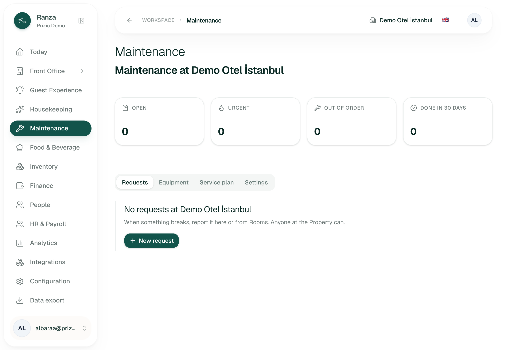
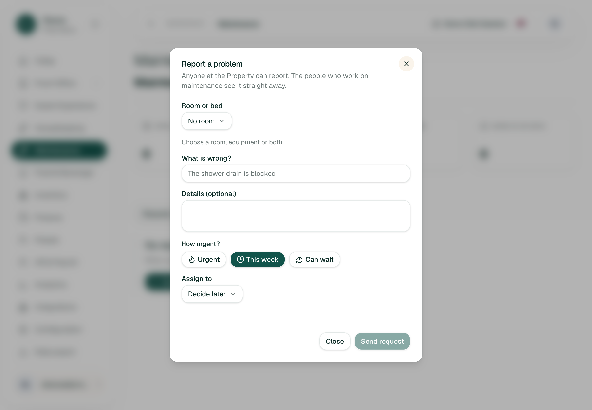
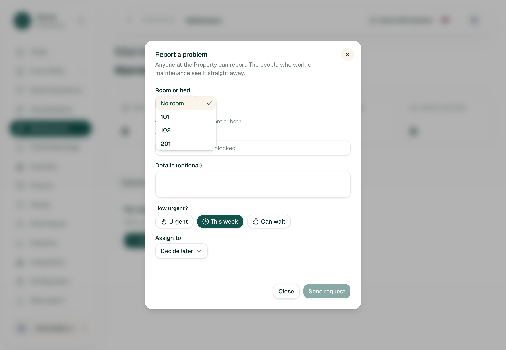
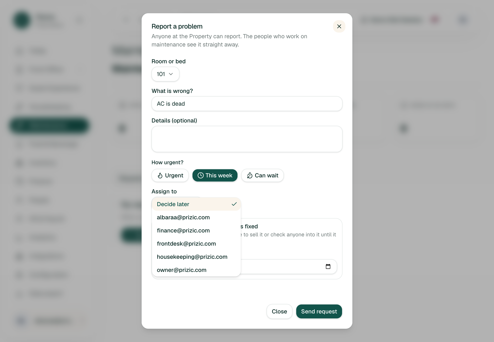
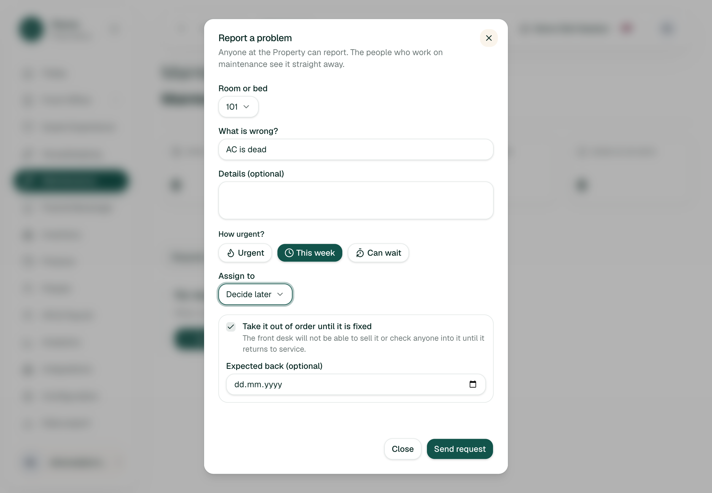
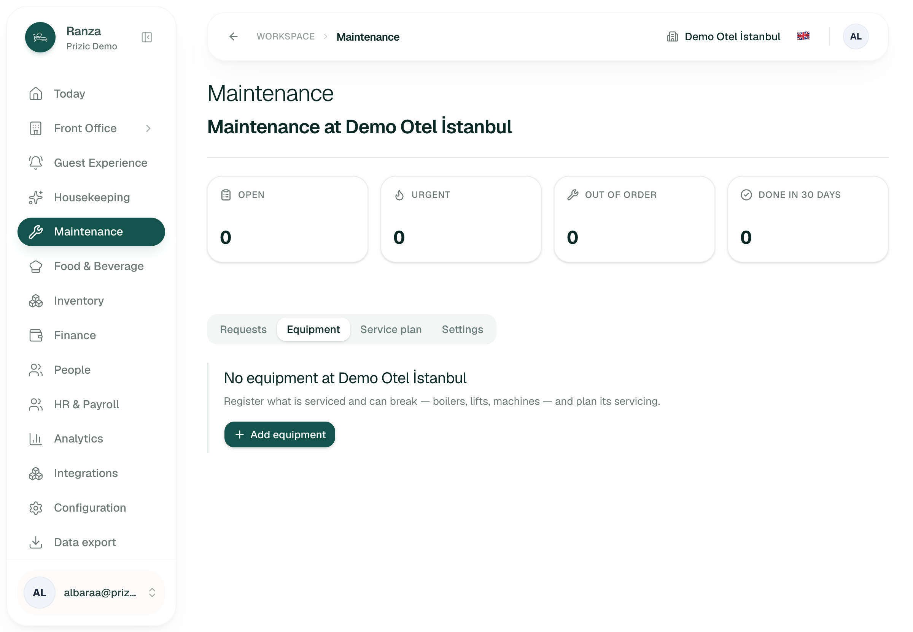
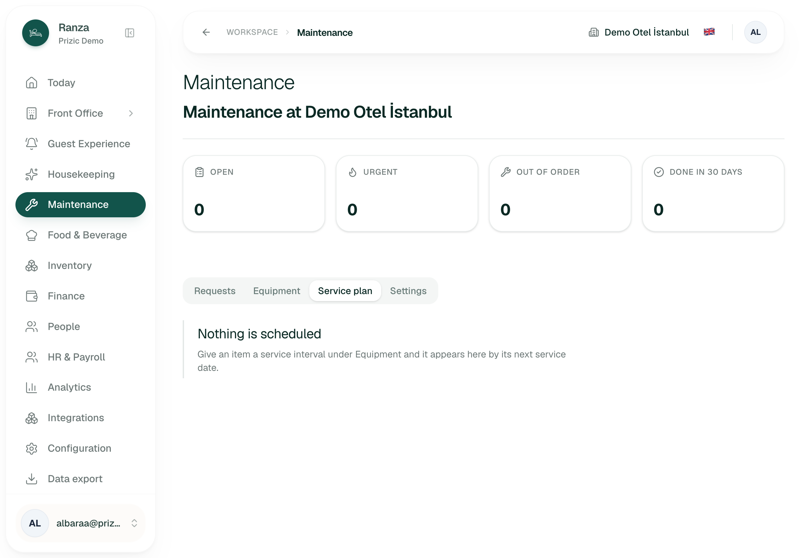
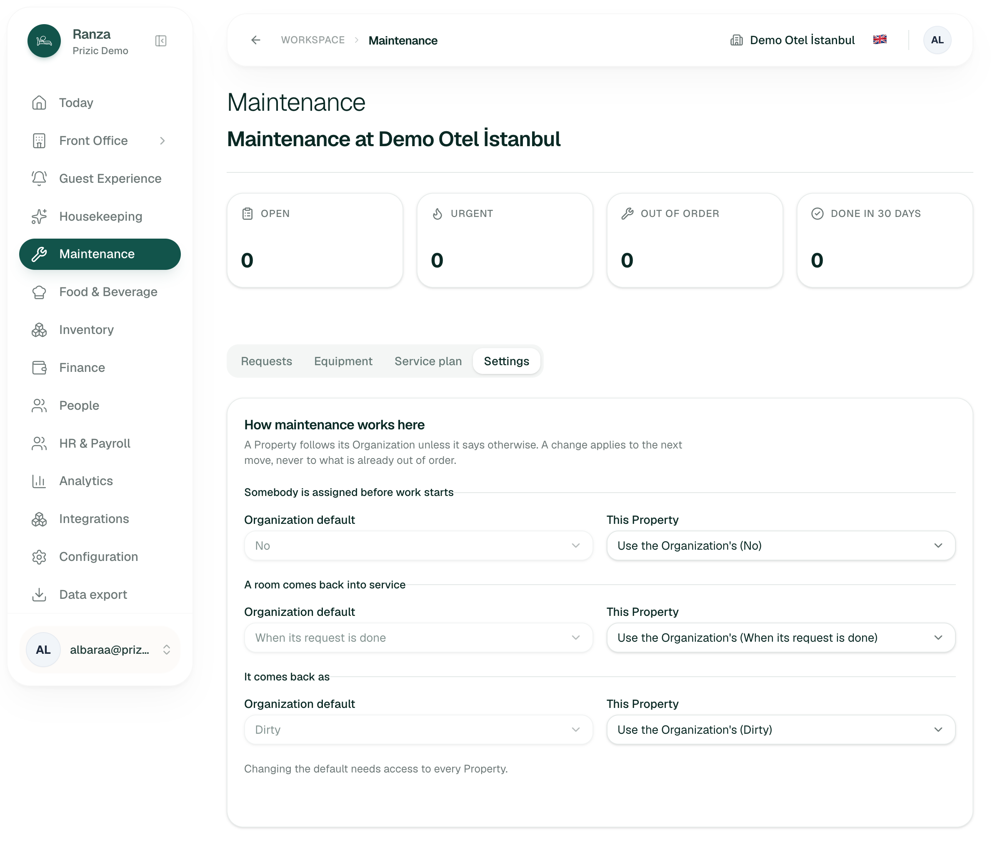
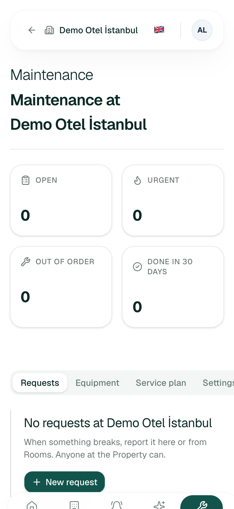
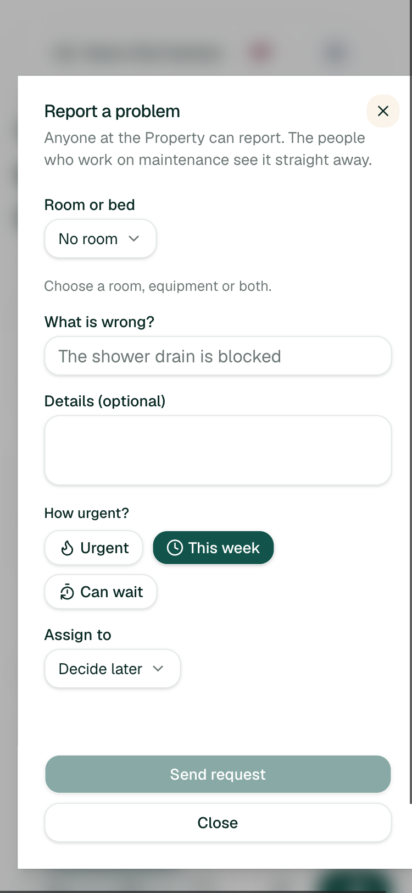
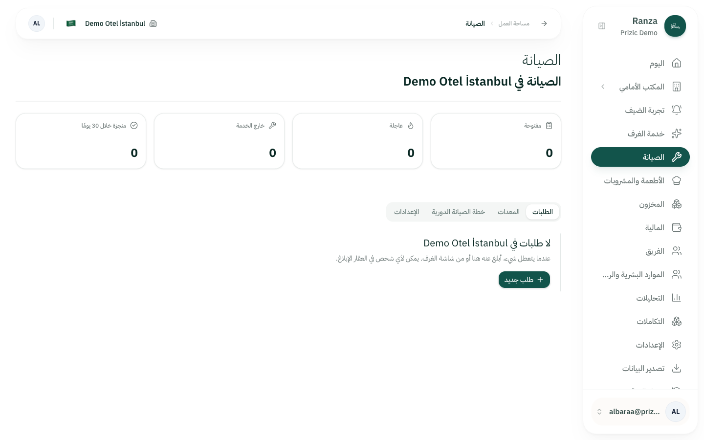
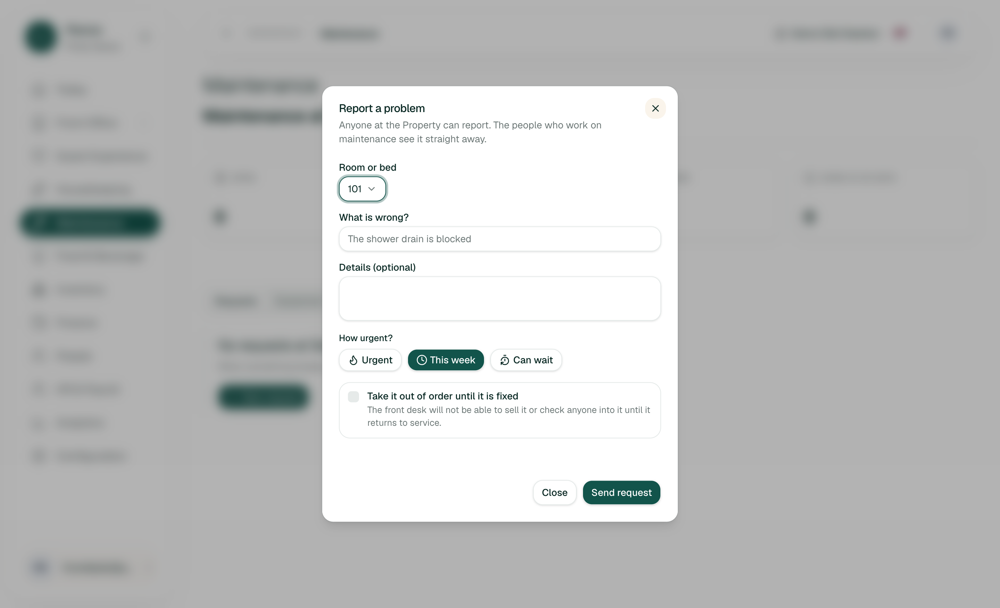
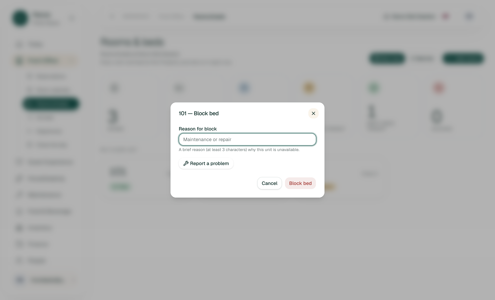
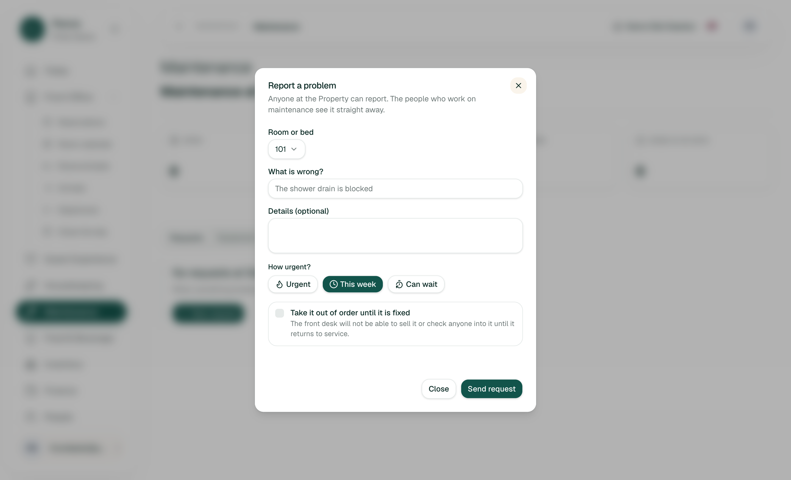
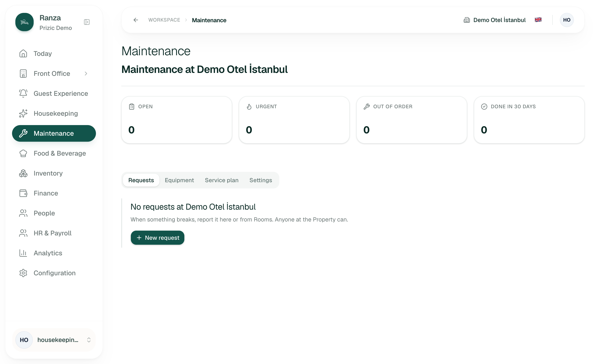
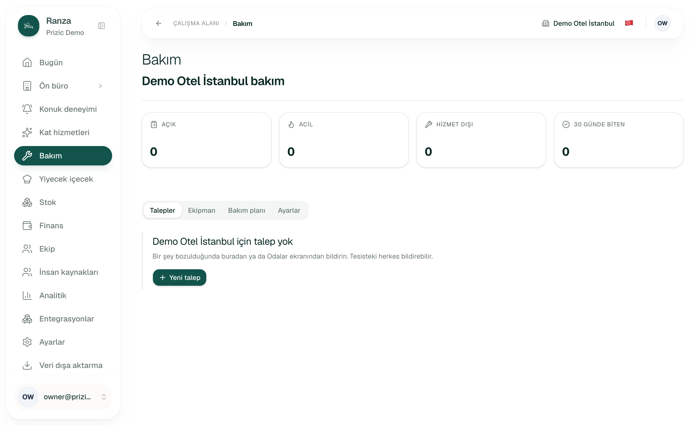